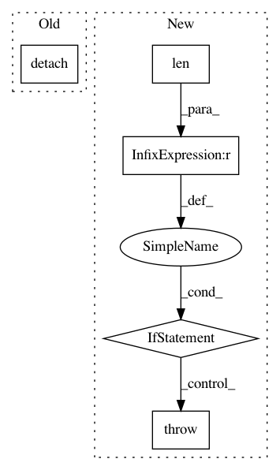

705d7ff759a0b76ddf1b30ab8ef135c0b67efa8b,art/attacks/evasion/projected_gradient_descent/projected_gradient_descent_pytorch.py,ProjectedGradientDescentPytorch,generate,#ProjectedGradientDescentPytorch#Any#Any#,123
Before Change
// else 100 * compute_success(self.classifier, x, y, adv_x_best, self.targeted, batch_size=self.batch_size),
// )
return adv_x.cpu().detach().numpy()
def _compute_perturbation(self, batch, batch_labels):
// Pick a small scalar to avoid division by 0
After Change
mask = kwargs.get("mask")
if mask is not None:
// Ensure the mask is broadcastable
if len(mask.shape) > len(x.shape) or mask.shape != x.shape[-len(mask.shape):]:
raise ValueError("Mask shape must be broadcastable to input shape.")
adv_x_best = None
rate_best = None
In pattern: SUPERPATTERN
Frequency: 3
Non-data size: 5
Instances
Project Name: IBM/adversarial-robustness-toolbox
Commit Name: 705d7ff759a0b76ddf1b30ab8ef135c0b67efa8b
Time: 2020-04-23
Author: M.N.Tran@ibm.com
File Name: art/attacks/evasion/projected_gradient_descent/projected_gradient_descent_pytorch.py
Class Name: ProjectedGradientDescentPytorch
Method Name: generate
Project Name: arraiy/torchgeometry
Commit Name: e06eee5deec11dc03d6c4975eb9a57f2bc6edd30
Time: 2019-05-28
Author: jiangwei1993@gmail.com
File Name: kornia/utils/image.py
Class Name:
Method Name: tensor_to_image
Project Name: cornellius-gp/gpytorch
Commit Name: 1e96334c79060b60c51c7d3b85bea7048d8e1ad2
Time: 2019-09-29
Author: kaw293@cornell.edu
File Name: gpytorch/kernels/grid_kernel.py
Class Name: GridKernel
Method Name: update_grid